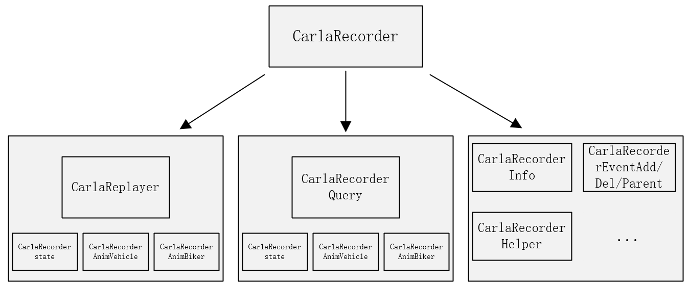

CARLA Recorder 模块说明文档
本文档详细介绍了 CARLA 模拟器中 CarlaRecorder 模块的主要功能、核心类与方法定义及其模块间依赖关系，旨在帮助开发者理解其录像与回放机制，并把握模块层次结构。
目录
- 模块概述
- 主要类与职责
- 功能说明
- 初始化
- 录像控制
- 回放控制
- 查询功能
- 关键数据结构
- 依赖模块与层级流程
- 附录：包结构
- 附加模块：CarlaRecorderAnimBiker
- 附加模块：CarlaRecorderAnimVehicles
- 附加模块：CarlaRecorderAnimVehiclesWheels
- 常见问题与调试建议
模块概述
CarlaRecorder 模块是 CARLA 模拟器中实现仿真状态完整复现的关键组件。它负责在仿真运行时对车辆、行人、光照条件、碰撞等状态数据进行高效记录，并支持后续的精准回放。其核心功能包括数据采集、压缩编码、文件读写、时间控制及信息查询等。该模块特别适用于实验复现、调试定位及行为重构等应用场景。
主要类与职责
| 类名 | 文件 | 说明 | 调用位置 |
|---|---|---|---|
ACarlaRecorder |
CarlaRecorder.h / CarlaRecorder.cpp |
主要控制类，继承自 Unreal AActor，提供录像/回放接口。 |
在主控制器（如 GameMode）中启动 |
CarlaReplayer |
CarlaReplayer.h |
实现回放控制，包括时间倍率、忽略特定角色等设置。 | 由 ACarlaRecorder::ReplayFile() 触发 |
CarlaRecorderQuery |
CarlaRecorderQuery.h |
用于分析已录制文件的数据，如碰撞信息、阻塞信息等。 | 用于脚本分析或命令行查询工具 |
功能说明
初始化
ACarlaRecorder::ACarlaRecorder()
设置 TickGroup 为 TG_PrePhysics
默认禁用录像功能
录像控制
void Enable()
void Disable()
void Ticking(float DeltaSeconds)
// 录像流程
if (Recorder.IsEnabled()) {
Recorder.Ticking(DeltaSeconds);
└──> 调用 Snapshot -> 记录实体状态 -> 写入数据包
}
Ticking() 方法被定期调用以采集仿真状态
使用 PlatformTime 与 VisualTime 跟踪物理时间与视觉时间
与 CarlaEpisode 和 FActorRegistry 联动获取仿真环境信息
示例：如何开始一次录像
// 开启录像
CarlaRecorder.Enable();
// 运行一段时间后关闭
CarlaRecorder.Disable();
回放控制
std::string ReplayFile(std::string Name, double TimeStart, double Duration, uint32_t FollowId, bool ReplaySensors)
void SetReplayerTimeFactor(double TimeFactor)
void SetReplayerIgnoreHero(bool IgnoreHero)
void SetReplayerIgnoreSpectator(bool IgnoreSpectator)
void StopReplayer(bool KeepActors)
通过 ReplayFile() 加载文件并控制回放参数
支持设置时间倍率与忽略特定角色
SetReplayerTimeFactor()：设置播放倍速
StopReplayer() 控制是否保留回放后生成的角色对象
查询功能
std::string ShowFileInfo(std::string Name, bool bShowAll)
std::string ShowFileCollisions(std::string Name, char Type1, char Type2)
std::string ShowFileActorsBlocked(std::string Name, double MinTime, double MinDistance)
ShowFileInfo()：查看录制文件的基础信息
ShowFileCollisions()：查询特定对象类型之间的碰撞事件
ShowFileActorsBlocked()：查找因距离/时间被阻挡的实体
关键数据结构
| 结构体 | 描述 |
|---|---|
CarlaRecorderPlatformTime |
记录平台物理时间信息，用于时间对齐 |
CarlaRecorderVisualTime |
存储视觉时间戳，与画面帧同步 |
CarlaRecorderPacketId |
枚举各类数据包标识，如 FrameStart、Collision、EventAdd 等 |
依赖模块与层级流程
模块依赖流程图

各级说明
ACarlaRecorder（顶层控制器） 提供录像和回放的主要接口，是模块的入口类。它控制 Replayer 和 Query 子模块的使用。
CarlaReplayer（回放控制器） 管理回放过程，控制时间倍率、跟踪 ID、忽略设置等，依赖多个状态与动画模块：
CarlaRecorderState：保存每一帧的对象状态信息
CarlaRecorderAnimVehicle：记录车辆动画数据（速度、油门、转向等）
CarlaRecorderAnimBiker：记录骑行者动画数据
CarlaRecorderQuery（数据查询器） 用于从录制文件中分析碰撞、阻塞等行为，依赖：
CarlaRecorderCollision：存储碰撞事件
CarlaRecorderWalkerBones：记录行人骨骼信息
CarlaRecorderAnimBiker：查询骑行者动画行为
CarlaRecorderInfo / Event 系列
CarlaRecorderInfo：包含帧开始、结束、平台时间等全局信息
EventAdd/EventDel/EventParent：记录实体的创建、销毁与父子关系
CarlaRecorderHelper 提供通用辅助函数，如读取头信息、数据解码、ID 映射等
附录：包结构
Carla/
├── Source/
│ └── Carla/
│ └── Recorder/
│ ├── CarlaRecorder.cpp
│ ├── CarlaRecorder.h
│ ├── CarlaRecorderQuery.h
│ ├── CarlaRecorder[模块].h (多个)
│ └── CarlaReplayer.h
附加模块：CarlaRecorderAnimBiker
该模块用于记录骑行者（骑车人）的动画数据，是 Recorder 系统中专门处理骑行者运动状态的子模块。
主要结构体与类
| 名称 | 类型 | 说明 |
|---|---|---|
CarlaRecorderAnimBiker |
struct |
表示单个骑行者的动画状态记录，包含速度、引擎转速等属性 |
CarlaRecorderAnimBikers |
class |
管理多个骑行者动画记录集合，支持批量读写与清空操作 |
核心方法说明
CarlaRecorderAnimBiker
void Write(std::ostream &OutFile) const
将 DatabaseId、ForwardSpeed、EngineRotation 写入输出流
void Read(std::istream &InFile)
从输入流读取上述属性以恢复对象状态
CarlaRecorderAnimBikers
void Add(const CarlaRecorderAnimBiker &Biker)
添加单个动画记录项到内部容器
void Clear()
清空所有骑行者记录
void Write(std::ostream &OutFile) const
写入数据包头、记录数量及所有骑行者对象数据到输出流
void Read(std::istream &InFile)
从输入流批量读取骑行者记录数据
const std::vector<CarlaRecorderAnimBiker>& GetBikers()
提供访问骑行者记录集合的只读引用
数据格式规范
该模块使用的数据包类型标识为 CarlaRecorderPacketId::AnimBiker，在录制/回放过程中可通过该标识对包类型进行分类处理。
附加模块：CarlaRecorderAnimVehicles
模块概览
该模块用于记录和管理多个车辆的动画信息，支持序列化读写操作，主要用于仿真环境中的数据回放、状态还原等功能场景。
CarlaRecorderAnimVehicle 结构体
用于表示单个车辆在某一时刻的动画状态信息。
成员变量说明
| 成员名 | 类型 | 说明 |
|---|---|---|
DatabaseId |
uint32_t |
数据库中该车辆的唯一标识符 |
Steering |
float |
转向角度值（如方向盘偏转） |
Throttle |
float |
油门开度（0\~1） |
Brake |
float |
刹车开度（0\~1） |
bHandbrake |
bool |
手刹状态（true 表示已拉起） |
Gear |
int32_t |
当前挡位（如 -1 表示倒档） |
成员函数说明
| 函数名 | 参数类型 | 返回值类型 | 说明 |
|---|---|---|---|
Read(std::istream&) |
输入流 | void |
从输入流中读取该结构体内容 |
Write(std::ostream&) |
输出流 | void |
将该结构体内容写入输出流中 |
CarlaRecorderAnimVehicles 类
用于管理多个车辆动画信息对象，并提供读写与集合操作功能。
成员函数说明
| 函数名 | 参数类型 | 返回值类型 | 说明 |
|---|---|---|---|
Add(const CarlaRecorderAnimVehicle&) |
单个车辆信息对象 | void |
添加一个车辆动画信息到集合中 |
Clear() |
无 | void |
清空集合 |
Write(std::ostream&) |
输出流 | void |
将所有车辆动画信息写入输出流（如文件） |
Read(std::istream&) |
输入流 | void |
从输入流读取多个车辆动画信息 |
GetVehicles() |
无 | const std::vector<CarlaRecorderAnimVehicle>& |
获取只读车辆动画信息集合引用 |
成员变量说明（私有）
| 成员名 | 类型 | 说明 |
|---|---|---|
Vehicles |
std::vector<CarlaRecorderAnimVehicle> |
用于存储所有车辆的动画信息结构体集合 |
内存与对齐优化
使用 #pragma pack(push, 1) 和 #pragma pack(pop) 精确控制结构体的字节对齐方式（1 字节对齐），以确保与二进制数据一致，便于持久化与传输。
使用 #pragma once 避免头文件重复包含，保证编译效率与正确性。
模块功能总结
| 功能 | 描述 |
|---|---|
| 单车动画信息的读取与写入 | 结构体支持从/向文件流中高效读取或写入车辆动画状态 |
| 多车数据集合管理 | 类封装 vector 操作，支持添加、清空、读取与输出多个车辆状态 |
| 二进制数据对齐 | 使用 1 字节对齐方式确保跨平台或跨系统的二进制数据兼容性 |
附加模块CarlaRecorderAnimVehiclesWheels
该模块属于 CARLA 模拟器 车辆动画记录系统的一部分，主要用于序列化和反序列化车辆 车轮动画信息（如方向盘角度、轮胎转速等），支持多车辆场景下的录制与回放。
本模块包含以下关键组件：
WheelInfo: 单个车轮状态信息结构体
CarlaRecorderAnimWheels: 单辆车的轮胎状态记录
CarlaRecorderAnimVehicleWheels: 多辆车的轮胎状态集合与操作接口
1. struct WheelInfo
表示单个车轮的动画状态。该结构体通过 #pragma pack(push, 1) 控制内存对齐为 1 字节，以便高效序列化。
成员变量
| 成员 | 类型 | 描述 |
|---|---|---|
Location |
EVehicleWheelLocation |
枚举，表示车轮位置 |
SteeringAngle |
float |
转向角（单位：角度） |
TireRotation |
float |
轮胎旋转角（单位：角度） |
方法
void Write(std::ostream &OutFile) const
将 WheelInfo 写入二进制输出流。
void Read(std::istream &InFile)
从输入流中读取数据，填充 WheelInfo 字段。
2. struct CarlaRecorderAnimWheels
表示单辆车的所有车轮动画状态集合。
成员变量
| 成员名 | 类型 | 描述 |
|---|---|---|
DatabaseId |
uint32_t |
数据库中车辆唯一标识 |
WheelValues |
std::vector<WheelInfo> |
所有车轮的信息集合 |
方法
void Write(std::ostream &OutFile)
写入车辆 ID 和所有轮胎信息到输出流。
void Read(std::istream &InFile)
读取车辆 ID 与车轮信息，构建完整对象。
3. class CarlaRecorderAnimVehicleWheels
负责管理 多辆车的轮胎动画信息，可用于录制与回放。
成员变量
| 成员名 | 类型 | 描述 |
|---|---|---|
VehicleWheels |
std::vector<CarlaRecorderAnimWheels> |
存储多辆车的轮胎数据 |
方法
void Add(const CarlaRecorderAnimWheels &InObj)
添加一辆车的轮胎动画数据。
void Clear(void)
清空所有记录。
void Write(std::ostream &OutFile)
按以下格式序列化写入数据：
- 数据包 ID（枚举
CarlaRecorderPacketId::AnimVehicleWheels） - 占位区（写入后回填实际包大小）
- 车辆数
- 每辆车的
CarlaRecorderAnimWheels - 回填实际包大小
void Read(std::istream &InFile)
读取车辆数量与每辆车的轮胎信息。
const std::vector<CarlaRecorderAnimWheels>& GetVehicleWheels()
返回所有车辆轮胎数据的引用。
常见问题与调试建议
- 问题：录像文件无法加载
- 请检查路径是否正确，录制时是否成功写入磁盘。
-
使用
ShowFileInfo()方法检查文件结构是否完整。 -
问题：回放时某些角色未出现
- 检查是否设置了
IgnoreHero或IgnoreSpectator为 true。 -
确认相关角色在录制期间已生成并被记录。
-
调试建议：
- 使用
QueryCollisions()对回放数据进行验证，分析实体是否按预期交互。